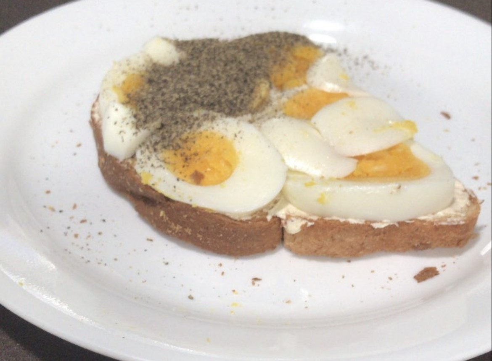

Boiled Egg on Toast

Description
Are you a fan of eggs and putting in the bare minimum to make a sufficient snack or meal? If you said yes, this recipe for boiled egg on toast is made for you! It's simple, delicious, and can be made quickly or ahead of time. And if your nose is stuffy, the seasoning in this dish is sure to help clear those sinuses!
Ingredients
- Boiled eggs
- Bread
- Salt
- Pepper
- (Optional) Mayonnaise
Steps
- Toast the bread to desired crispiness.
- Spread the desired amount of mayonnaise to cover one face of the toast.
- Slice the boiled egg and lay it across the toast on the mayonnaise side, until it is all covered or no more slices are left.
- Season as desired with salt and pepper. Ensure you open the right half of your pepper container lid - use the spinkle side, not the completely open side as I did.